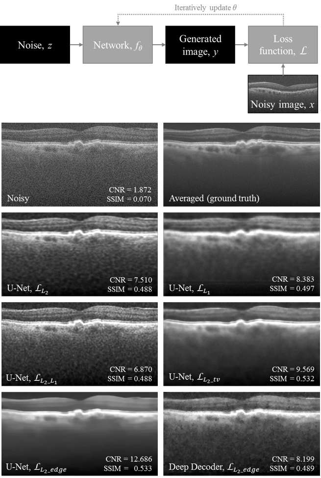

| Paper PDF |

|
Optical coherence tomography (OCT) is a cross-sectional imaging technique that relies on coherence of the lightsource to obtain depth information of biological tissue. OCT has been adopted for a variety of clinical uses, but is most prominently used for screening and diagnosis in ophthalmology. However, OCT imaging is affected by several noise processes -- mainly shot and speckle. The presence of such noise can make it difficult to visualize fine structures and pathologies or perform segmentation to delineate different tissue layers. All methods that currently exist to denoise OCT images rely on averaging or supervised machine learning methods. Here, we employ an unsupervised method based on a deep image prior to reconstruct a denoised version of an OCT B-scan from random noise. We investigate various network architectures and loss functions for a series of B-scans and show the results of the noise reduction.
|
|
|
| Paper: |
| Code and Data: |